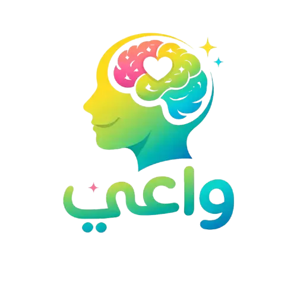

ليه بنبعد؟
💬
خليني أسألك بصراحة:
هل ممكن:
لو ترددت… فده طبيعي
ده اسمه مسافة اجتماعية
👉 سببه:
بس الحقيقة:
إنت مش بتبعد عن المرض…
إنت بتبعد عن إنسان
خليني أطمنك:
👉 أغلب المرضى النفسيين:
✨ اللي محتاجينه:
جرب تقرب خطوة…
ممكن تفرق جدًا